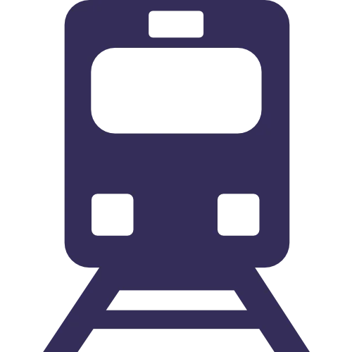

The Young Researchers' Symposium on Plant Photobiology for 2026 will be set against the stunning backdrop of Edinburgh, Scotland's vibrant capital. Seamlessly blending history, culture, and innovation, Edinburgh provides an inspiring setting for scientific collaboration. As a UNESCO World Heritage site, Edinburgh boasts breathtaking architecture, renowned festivals such as the Fringe and the Edinburgh International Festival, and a thriving research ecosystem. Its scenic landscapes, excellent transport links, and world-class hospitality make it the perfect destination for the next instalment of YRSPP.
The symposium events will be based in the Nucleus Building (accessibility info here), at the heart of The King's Buildings campus at the University of Edinburgh. We will also venture in to the city for some of the planned activities.
For detailed travel information to the King's Buildings campus, please visit the University of Edinburgh's travel page here.
The Nucleus Building
The King's Buildings Campus
Thomas Bayes Road
Edinburgh
EH9 3FG
Edinburgh is well connected to the rest of the UK by bus and rail routes, and to the rest of the world through its nearby airports. The University of Edinburgh has compiled a useful summary here.

Edinburgh Waverley Station (EDB)If you're coming from within the UK, getting a train to Edinburgh Waverley Train Station is a great option. From here there are plenty of bus and tram links to the rest of the city. We'd recommend pre-booking in advance to get the lowest prices.
If you're travelling from overseas, flying to Edinburgh Airport is the simplest option.
To get to Edinburgh city centre from the airport, we'd recommend the airport tram or bus services (Airlink 100 or Airport Express), or alternatively an Uber if you prefer.
You can also get to Edinburgh by flying to Glasgow airport then taking the purple AIR 500 bus to Buchanan Street Bus Station in Glasgow city centre.
To get to Edinburgh, there are regular bus services from this bus station (we'd recommend pre-booking with Megabus or National Express) or trains from the nearby Glasgow Queen Street Station (GLQ).
Edinburgh is a pedestrian-friendly city, with a network of bus, tram and rail services connecting its suburbs. The University of Edinburgh has put together a nice summary of these here.
YRSPP is unfortunately not able to offer accommodation packages, but the city of Edinburgh has a wide range of accommodation options on offer for you to choose from (some suggestions at visitscotland.com and edinburgh.org). When booking your stay, make sure to consider the proximity to the main venue (the Nucleus Building) which is located a short bus ride south of the city centre.
The nearest chain hotel to the venue is the Cameron Toll TravelLodge, which is just up the road from the Kings Buildings Campus.
The University of Edinburgh may be able to offer deals on their hotels at uoecollection.com – email reservations@ed.ac.uk to enquire about their current offers (mention that you are attending the YRSPP 2026 symposium).
Visit the University of Edinburgh's website for lots of information about planning your visit to Edinburgh.
Make sure to check whether you will require a visa before travelling to the UK. We are able to provide a personalised letter confirming your symposium registration once you have registered via ePay – email us at yrspp.mail@gmail.com with your passport number and institutional address and we will put together the letter.
Scotland’s weather is unpredictable, especially in April, so it is advisable to pack layers (and definitely a waterproof coat) and prepare for rain or sun and temperatures anywhere between 5–15°C.
The symposium will be conducted entirely in English, with no translation service provided.
In an emergency, dial 999 (fire, police, ambulance).
For non-emergencies, you can contact the police on 101. For urgent (but non-emergency) health advice you can phone 111 to access the NHS 24 service.
The symposium organisers do not accept liability for personal accidents, injuries, or loss/damage to personal belongings during your time in Edinburgh. It is strongly recommended that delegates purchase travel and health insurance before travelling.
Britain uses Type G power plugs (3 rectangular pins in a triangular pattern) and a 240V electrical system. If you are travelling from overseas, you may need a power adapter to charge your devices.
Scotland’s official currency is the pound sterling (£, GBP). Most establishments accept both cash and card, though some have moved to cashless systems. Cash can be withdrawn from ATMs which are readily available.
Bus services usually accept contactless payments. If you are paying with cash on a bus service, you must be able to provide the exact change required.
VAT (Value Added Tax) is normally already included in the listed price of goods and services. Scotland does not have a big tipping culture – rounding the bill up or leaving a small tip (e.g. 10%) is appreciated but not required.
Banks are generally open 9am to 5pm Monday–Friday. Some Scottish banks issue a series of special Scottish banknotes, which may not be accepted outside of Scotland.
Since the UK left the the European Union in 2020, the UK is generally not covered by EU roaming plans. Check with your provider whether you will be able to use your plan in the UK.
Throughout the symposium, we hope you also take the opportunity to explore the rich heritage and dynamic energy of Edinburgh. As part of the symposium, we will be organising a walking tour and a ceilidh to show you some of Edinburgh's Scottish heritage. Here are some additional activities to consider if you'd like to spend some time exploring the city: